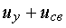
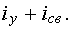

1. ПЕРЕХОДНЫЕ ПРОЦЕССЫ В ЛИНЕЙНЫХ ЦЕПЯХ
Переходным процессом называют процесс изменения токов и напряжений в цепи при переходе от одного установившегося режима к другому. Причиной, вызывающей начало переходного процесса, является коммутация, под которой понимают отключение цепи или её подключение к внешнему источнику питания, либо скачкообразное изменение топологии или параметров элементов цепи. Характер переходного процесса (апериодический, колебательный и др.) зависит как от вида цепи, накопленной в ней энергии, так и от характера изменения ЭДС Е либо тока J источника питания.
Переходный процесс в цепи может протекать как за счёт начального запаса энергии, накопленной в реактивных L и C элементах, так и за счёт энергии внешнего источника питания. При этом переходный процесс, протекающий за счёт расходования накопленной в элементах L и С энергии, называют свободным процессом или процессом собственных колебаний, а режим, близкий к стационарному, который устанавливается в цепи по истечении времени переходного процесса с момента коммутации, называют установившимся режимом, напряжения и токи в установившемся режиме - установившимися напряжениями и токами.
В общем случае напряжения и токи цепи в переходном режиме выражают в виде суммы установившихся и свободных составляющих, т. е.
u =  и i = 